התפתחות צילום החדשות
צילום החדשות (photojournalism) הופך לחלק בלתי נפרד ממקצוע העיתונות (ניתן להדפסה בהיקפים גדולים רק החל מ-1880).
משנות ה-30 של המאה ה-20 התחום תופס תאוצה, במידה רבה הודות למגזינים רבים המשמשים אכסניה להצגתו וכן הודות ליכולותיו 'לספר סיפור' (כצילום, וכן באמצעות הצגתו לצד טקסט מתאים ועל ידי כך להמחיש את זה).
בשנים האלו הולך ענף צילום החדשות ומתעצב לכדי מקצוע, וצלמי החדשות הופכים לחלק ממוסד שריר וקיים הנאבק על מקומו בתוך שדה העיתונות.
התנגדות כתבי הפרינט
זליצר מאפיינת במאמרה שלוש צורות עיקריות של התנגדות מצידם של כתבי הפרינט:
- הצילום פוגם בדיווח העיתונאי.
- הצילום = פעולה טכנית פשוטה שכל אחד יכול לבצע.
- הצילום ביכולותיו התיעודיות יכול אולי לעזור, אך לא להחליף.
צילומים אייקונים
חלק מהצילומים הללו, למשל, מקבלים עם פרסומם עד מהרה מעמד יוצא דופן – לא סתם צילומי חדשות, כי אם צילומים אייקונים.
play_circle_filledThe Falling Man | Behind The Photo | 100 Photos | TIME
לחץ לצפייה בסרטון על אחד הצילומים האייקונים ביותר
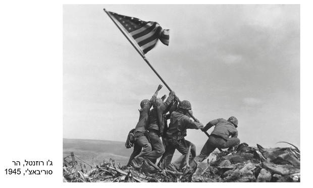
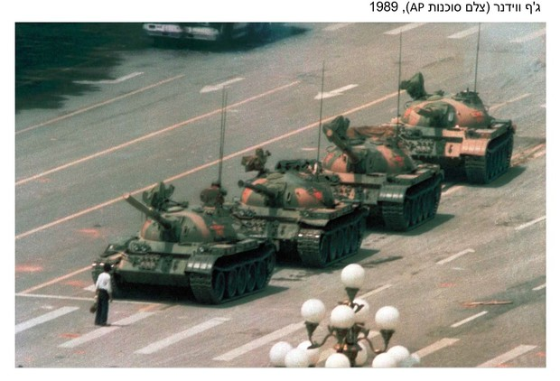
 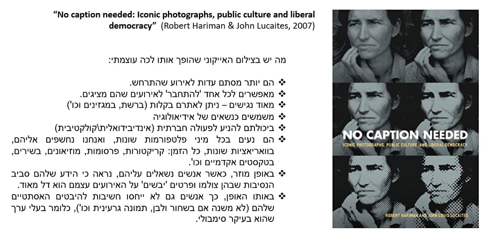
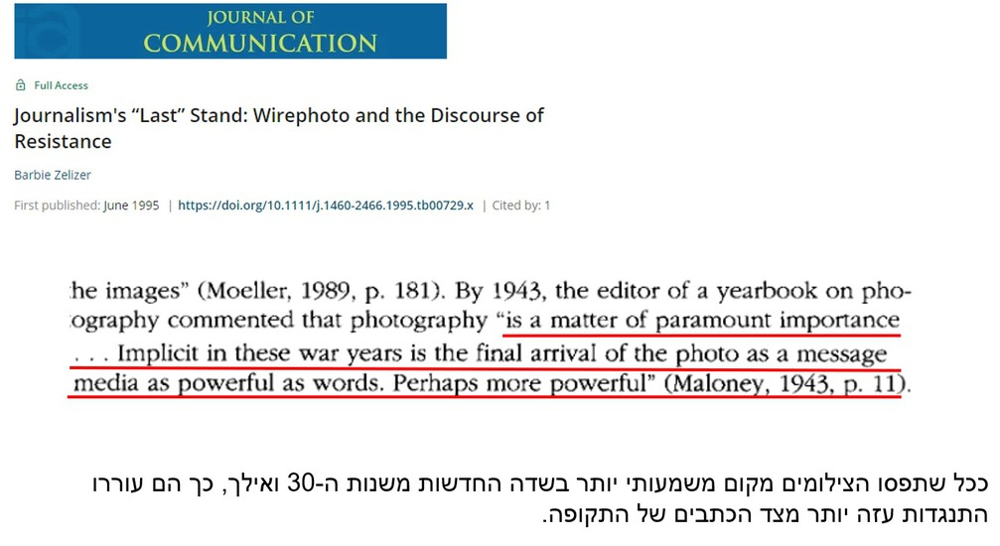
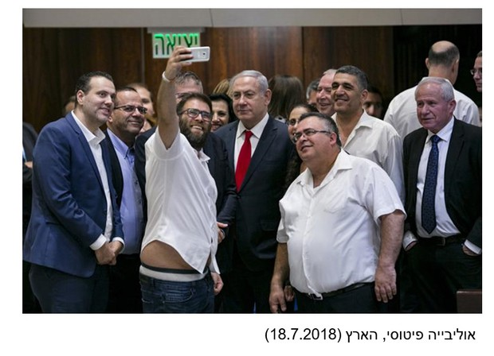
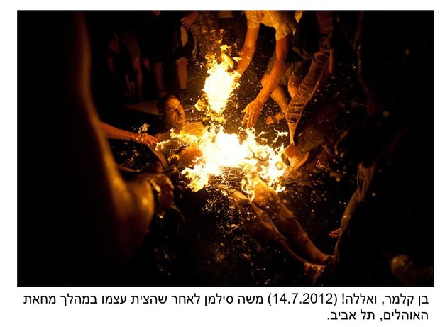
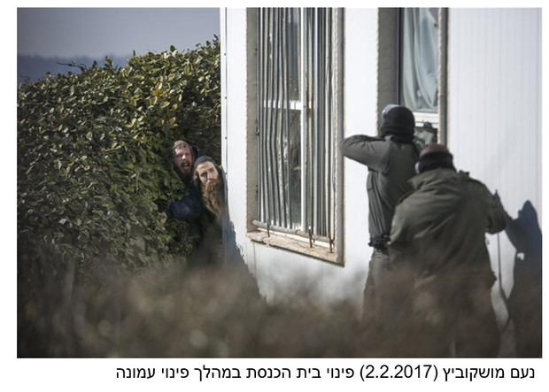
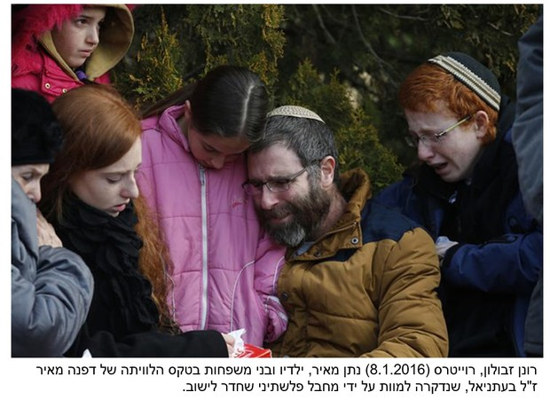
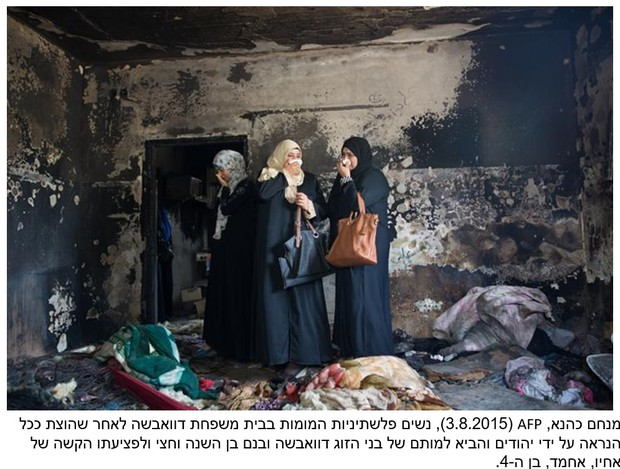
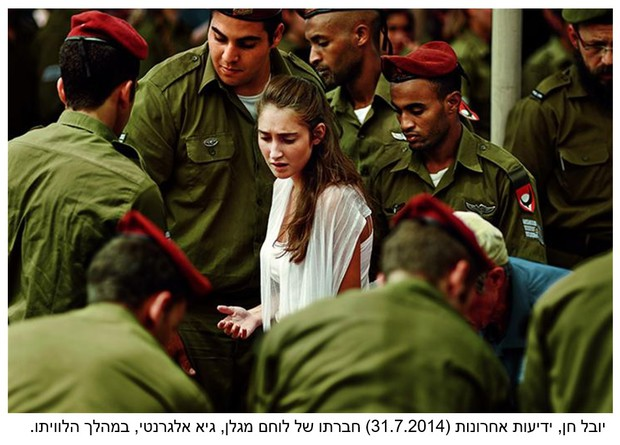
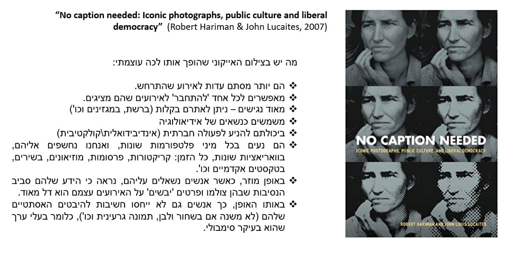
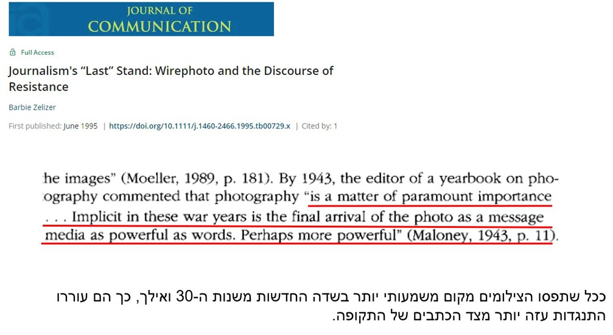
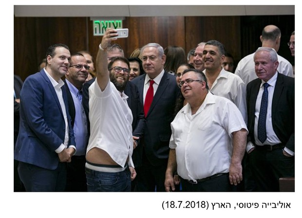
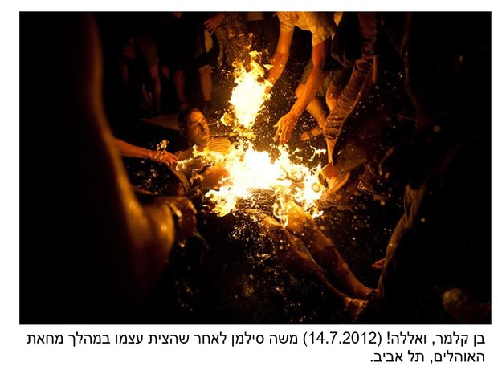
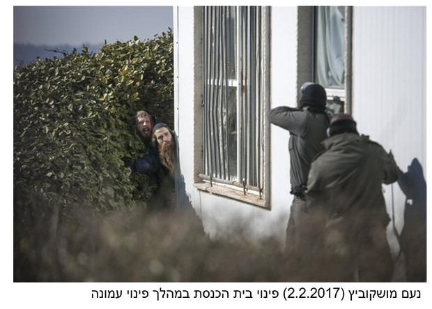
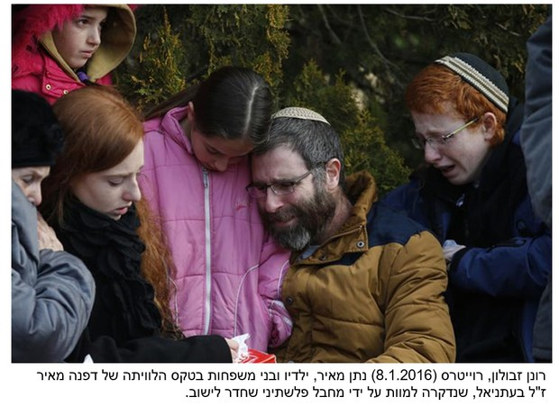
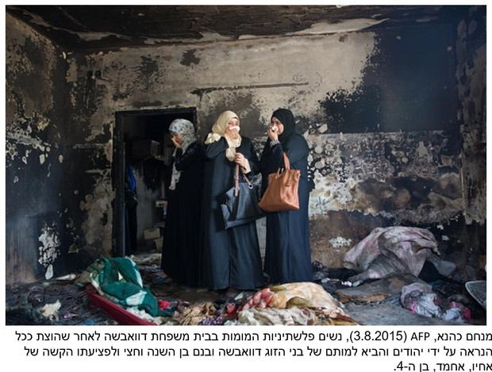
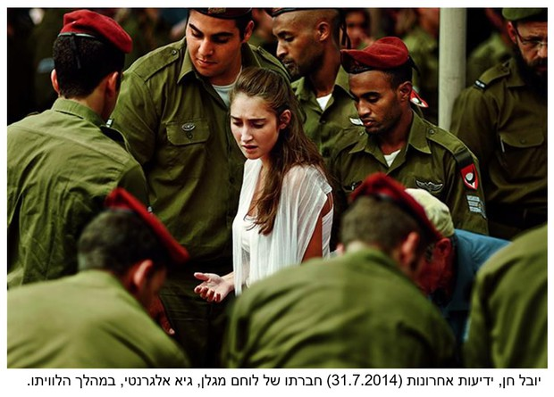
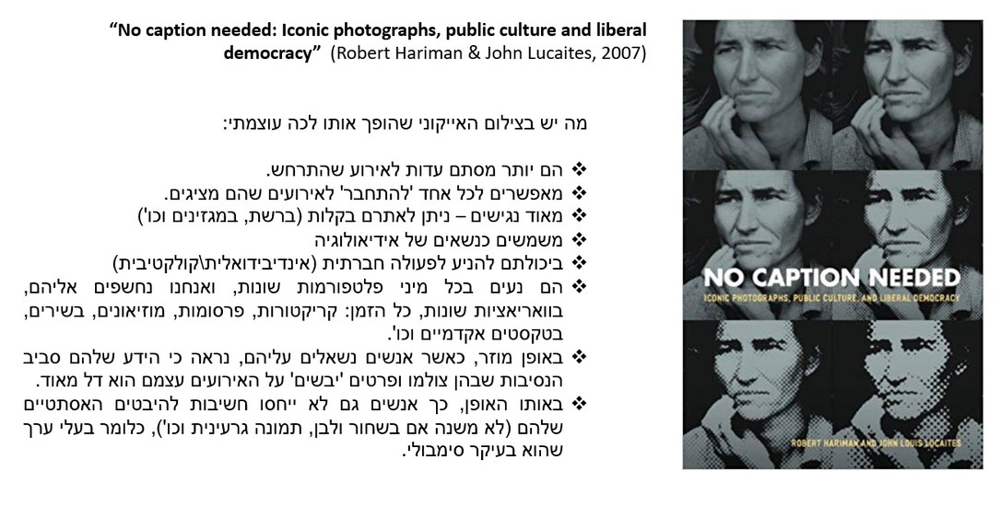
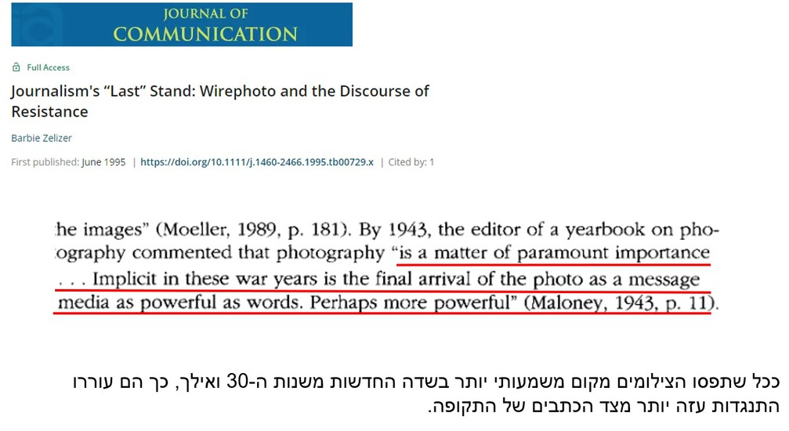
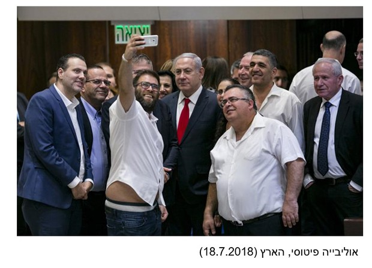
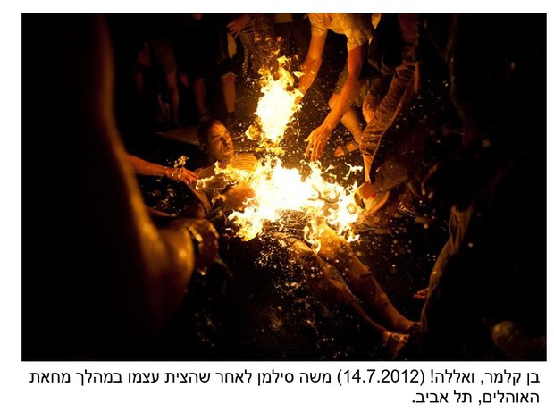
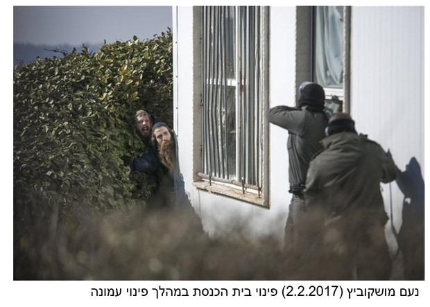
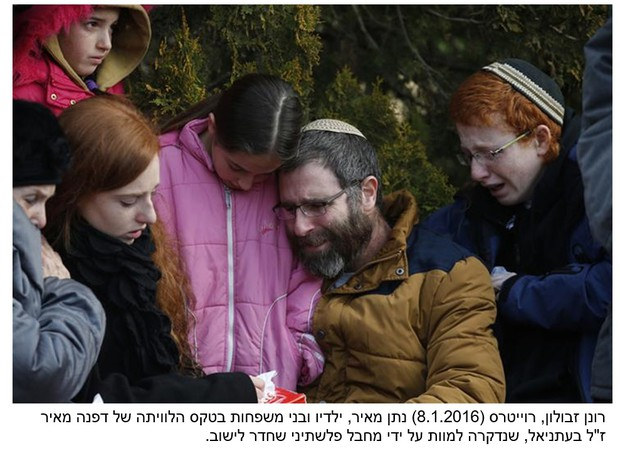
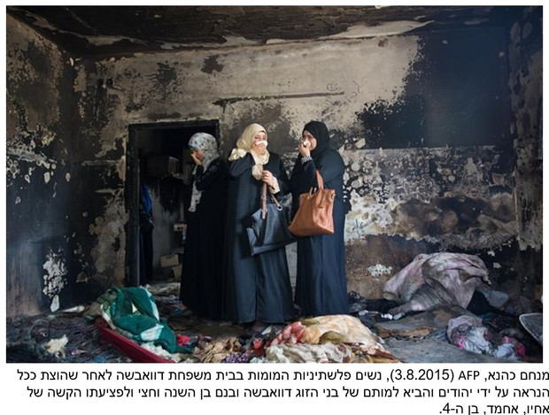
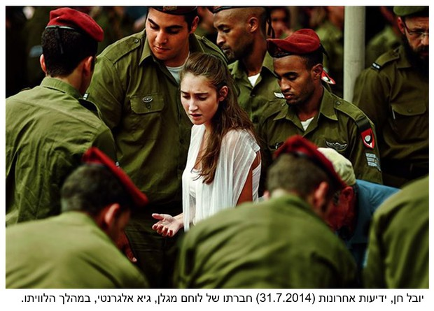